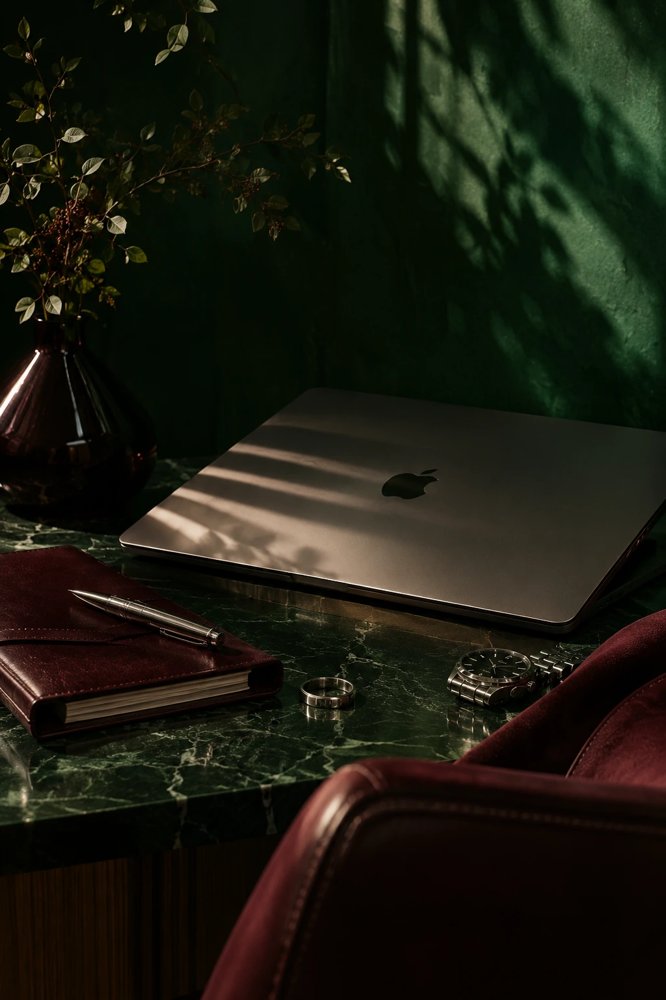

Собираю цифровые впечатления для брендов и специалистов: структура, дизайн, код, анимации, удобство и запуск – в одном процессе.

Код – это часть идеи.
МОЙ ПОДХОД
Я занимаюсь авторской разработкой сайтов для магазинов, брендов и частных специалистов. Сначала выясняю задачу и аудиторию, а потом подбираю структуру, визуальный стиль и нужные функции — не наоборот.
На старте уточняю, что человек должен увидеть и сделать на сайте: так каждый экран получает понятную задачу.
ДИЗАЙН И КОД
Верстаю сайты на HTML, CSS и JavaScript без конструкторов. Делаю адаптивные страницы, каталоги, портфолио и интерактивные презентации. Использую ИИ как вспомогательный инструмент, а итог проверяю и довожу под проект.
Уделяю внимание сетке, отступам и состояниям элементов — от большого монитора до небольшого телефона.
АНИМАЦИЯ И 3D
Люблю движение, которое помогает рассказать историю: плавное появление текста, скролл-сцены, 3D-объекты и продуманные переходы. Слежу, чтобы эффекты не мешали чтению и работе сайта на телефоне.
Эффекты выбираю под смысл проекта: анимация должна помогать восприятию, а не затруднять прокрутку.
ИНТЕГРАЦИИ
Подключаю формы заявок, Telegram-ботов и уведомления. При необходимости использую Cloudflare Workers и KV, настраиваю защиту форм и публикацию через GitHub Pages с собственным доменом.
Продумываю, куда попадёт заявка, как защищена форма и кто сможет управлять сайтом после запуска.
КАК МЫ РАБОТАЕМ
Обсуждаем задачу и бюджет, согласовываем объём работ и дизайн. Показываю промежуточный результат, собираю обратную связь, исправляю замечания. Договорённости фиксируем онлайн — без лишней бюрократии.
Работаю по этапам: сначала содержание и направление, затем макет, разработка, проверка и передача.
ПЕРЕД ЗАПУСКОМ
Проверяю отображение на разных экранах, кнопки, формы, навигацию и скорость. После согласования помогаю опубликовать сайт, подключить домен и передать доступы. При необходимости продолжаю обновлять проект.
Проверяю переходы, изображения и обратную связь после нажатий. Исправления вношу до публикации.
LUMO SITESКак я работаюМой подход к проектам
01 – 04
FrontendHTML / CSS / JavaScript
Адаптивная вёрстка, аккуратная типографика и понятная навигация.
Анимации3D / Motion / WebGL
3D-модели, анимации, взаимодействие и скролл-сцены.
ЗапускGitHub Pages / Cloudflare
Telegram-боты, Cloudflare, формы заявок, домены и публикация.